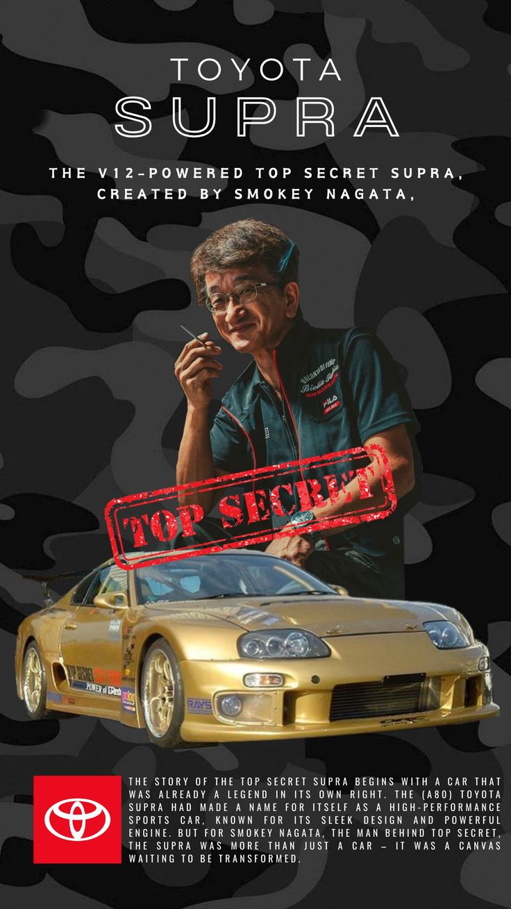

Singura Toyota Supra din lume propulsată de un motor V12 Twin-Turbo, creată pentru a depăși 400 km/h.Vezi Motorul

Legenda Urbană
Cine este Smokey Nagata?
Kazuhiko "Smokey" Nagata este fondatorul legendarului atelier de tuning Top Secret din Japonia. Este cunoscut în întreaga lume pentru cascadoria sa din 1999, când a încercat să atingă 320 km/h pe autostrada A1 din Marea Britanie, fapt ce a dus la arestarea sa și interzicerea intrării în UK.Nemulțumit de performanțele standard, el a creat "The Golden Supra": o mașină care a renunțat la legendarul motor 2JZ în favoarea unui monstru V12 provenit de pe o Toyota Century, modificat extensiv.